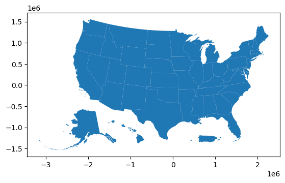

Code
!pip install cenpy
import cenpy
import numpy as np
np.random.seed(42)For our analysis, we need to collect data on the following variables.
Dependent variables: 1. GDP per capita 2. Life expectancy 3. Median household income 4. Education levels (we use percentage of population with bachelor’s degree as reference)
The dependent variables were selected because they are key measures related to the Human Development Index.
Independent variables: 1. Unemployment rate 2. Labour force participation rate 3. Labour Productivity (private non-farm) 4. Population 5. Poverty rate 6. Net exports by state
I also use the dependent variables as independent variables in the analysis. For example, when modelling the relation ship of GDP per capita against socioeconomic variables, life expectancy, median household income, and education levels become independent variables. This would enable us to explore which variables is more important in predicting the dependent variable.
!pip install cenpy
import cenpy
import numpy as np
np.random.seed(42)From cenpy we can access American Community Survey 5-Year data to obtain/derive the following socioeconomic variables: 1. Median Household Income 2. Education Levels 3. Unemployment rate 4. Labour force participation rate 5. Population 6. Poverty rate
# Finding data set
available = cenpy.explorer.available()
available.head(n=5)
# We use data from ACS 5 Year, Monthly Export and Import| c_isTimeseries | temporal | spatial | c_isAggregate | publisher | references | programCode | modified | license | keyword | ... | description | bureauCode | accessLevel | title | c_isAvailable | c_isCube | c_isMicrodata | c_documentationLink | c_dataset | vintage | |
|---|---|---|---|---|---|---|---|---|---|---|---|---|---|---|---|---|---|---|---|---|---|
| ABSCB2017 | NaN | 2017/2017 | United States | True | U.S. Census Bureau | https://www.census.gov/developers/ | 006:007 | 2020-04-30 00:00:00.0 | https://creativecommons.org/publicdomain/zero/... | (census,) | ... | The Annual Business Survey (ABS) provides info... | 006:07 | public | Annual Business Survey: Characteristics of Bus... | True | NaN | NaN | https://www.census.gov/developer/ | (abscb,) | 2017.0 |
| ABSCB2018 | NaN | 2018/2018 | United States | True | U.S. Census Bureau | https://www.census.gov/developers/ | 006:007 | 2020-10-26 00:00:00.0 | https://creativecommons.org/publicdomain/zero/... | (census,) | ... | The Annual Business Survey (ABS) provides info... | 006:07 | public | Annual Business Survey: Characteristics of Bus... | True | NaN | NaN | https://www.census.gov/developer/ | (abscb,) | 2018.0 |
| ABSCB2019 | NaN | 2019/2019 | US | True | U.S. Census Bureau | https://www.census.gov/developers/ | 006:007 | 2021-08-17 00:00:00.0 | https://creativecommons.org/publicdomain/zero/... | (census,) | ... | The Annual Business Survey (ABS) provides info... | 006:07 | public | 2019 Annual Business Survey: Characteristics o... | True | NaN | NaN | https://www.census.gov/developer/ | (abscb,) | 2019.0 |
| ABSCB2020 | NaN | 2020/2020 | US | True | U.S. Census Bureau | https://www.census.gov/developers/ | 006:007 | 2022-08-03 00:00:00.0 | https://creativecommons.org/publicdomain/zero/... | (census,) | ... | The Annual Business Survey (ABS) provides info... | 006:07 | public | 2020 Annual Business Survey: Characteristics o... | True | NaN | NaN | https://www.census.gov/developer/ | (abscb,) | 2020.0 |
| ABSCB2021 | NaN | 2021/2021 | United States | True | U.S. Census Bureau | https://www.census.gov/developers/ | 006:007 | 2023-07-24 10:30:52.0 | https://creativecommons.org/publicdomain/zero/... | (census,) | ... | The Annual Business Survey (ABS) provides info... | 006:07 | public | 2021 Annual Business Survey: Characteristics o... | True | NaN | NaN | https://www.census.gov/developer/ | (abscb,) | 2021.0 |
5 rows × 23 columns
We identify the dataset we want to use from cenpy. In this case it is ACSDT5Y.
acs = available.filter(regex="^ACS", axis=0)
available.filter(regex="^ACSDT5Y", axis=0).head(n=5)| c_isTimeseries | temporal | spatial | c_isAggregate | publisher | references | programCode | modified | license | keyword | ... | description | bureauCode | accessLevel | title | c_isAvailable | c_isCube | c_isMicrodata | c_documentationLink | c_dataset | vintage | |
|---|---|---|---|---|---|---|---|---|---|---|---|---|---|---|---|---|---|---|---|---|---|
| ACSDT5Y2009 | NaN | NaN | NaN | True | U.S. Census Bureau | https://www.census.gov/developers/ | 006:004 | 2019-08-27 13:11:18.0 | https://creativecommons.org/publicdomain/zero/... | (census,) | ... | The American Community Survey (ACS) is an ongo... | 006:07 | public | American Community Survey: 5-Year Estimates: D... | True | True | NaN | https://www.census.gov/developer/ | (acs, acs5) | 2009.0 |
| ACSDT5Y2010 | NaN | NaN | United States | True | U.S. Census Bureau | https://www.census.gov/developers/ | 006:004 | 2018-07-04 00:00:00.0 | https://creativecommons.org/publicdomain/zero/... | (census,) | ... | The American Community Survey (ACS) is an ongo... | 006:07 | public | ACS 5-Year Detailed Tables | True | True | NaN | https://www.census.gov/developer/ | (acs, acs5) | 2010.0 |
| ACSDT5Y2011 | NaN | NaN | NaN | True | U.S. Census Bureau | https://www.census.gov/developers/ | 006:004 | 2018-07-04 00:00:00.0 | https://creativecommons.org/publicdomain/zero/... | (census,) | ... | The American Community Survey (ACS) is an ongo... | 006:07 | public | ACS 5-Year Detailed Tables | True | True | NaN | https://www.census.gov/developer/ | (acs, acs5) | 2011.0 |
| ACSDT5Y2012 | NaN | NaN | NaN | True | U.S. Census Bureau | https://www.census.gov/developers/ | 006:004 | 2018-07-04 00:00:00.0 | https://creativecommons.org/publicdomain/zero/... | (census,) | ... | The American Community Survey (ACS) is an ongo... | 006:07 | public | ACS 5-Year Detailed Tables | True | True | NaN | https://www.census.gov/developer/ | (acs, acs5) | 2012.0 |
| ACSDT5Y2013 | NaN | NaN | NaN | True | U.S. Census Bureau | https://www.census.gov/developers/ | 006:004 | 2018-07-04 00:00:00.0 | https://creativecommons.org/publicdomain/zero/... | (census,) | ... | The American Community Survey (ACS) is an ongo... | 006:07 | public | ACS 5-Year Detailed Tables | True | True | NaN | https://www.census.gov/developer/ | (acs, acs5) | 2013.0 |
5 rows × 23 columns
cenpy.explorer.explain("ACSDT5Y2023")
acs = cenpy.remote.APIConnection('ACSDT5Y2023')acs.varslike(
pattern="B19019_001E",
by="attributes",
).sort_index()| label | concept | predicateType | group | limit | predicateOnly | hasGeoCollectionSupport | attributes | required | |
|---|---|---|---|---|---|---|---|---|---|
| B19019_001E | Estimate!!Total: | Median Household Income in the Past 12 Months ... | int | B19019 | 0 | NaN | NaN | B19019_001EA,B19019_001M,B19019_001MA | NaN |
We then extract out the following variables. Since the variables are in object format, we will convert them to float. Rename the variables for clarity.
acs_variables = [
"NAME",
"GEO_ID",
"B19019_001E", # Total Median Household Income
"B06009_001E", # Educational Attainment- Total
"B06009_002E", # Educational Attainment- Less than high school graduate
"B06009_003E", # Educational Attainment- High school graduate (equivalent)
"B06009_004E", # Educational Attainment- Some college or associate's degree
"B06009_005E", # Educational Attainment- Bachelor's degree or higher
"B01003_001E", # Total Population
"B23025_001E", # Total Population above 16
"B23025_002E", # Labor Force- Total
"B23025_005E", # Labour Force- Unemployed
"B17020_001E", # Population for whom poverty is determined
"B17020_002E", # Population below poverty level
]
# Filter out the data for state
USA_acs_data = acs.query(
cols=acs_variables,
geo_unit="state:*",
)
USA_acs_data.head(n=5)| NAME | GEO_ID | B19019_001E | B06009_001E | B06009_002E | B06009_003E | B06009_004E | B06009_005E | B01003_001E | B23025_001E | B23025_002E | B23025_005E | B17020_001E | B17020_002E | state | |
|---|---|---|---|---|---|---|---|---|---|---|---|---|---|---|---|
| 0 | Alabama | 0400000US01 | 62027 | 3448302 | 409381 | 1046374 | 1035466 | 584986 | 5054253 | 4056609 | 2358667 | 112849 | 4913932 | 768185 | 01 |
| 1 | Alaska | 0400000US02 | 89336 | 487903 | 31854 | 141206 | 162411 | 95793 | 733971 | 574021 | 380935 | 20644 | 716703 | 72978 | 02 |
| 2 | Arizona | 0400000US04 | 76872 | 4990633 | 544528 | 1171693 | 1646950 | 999535 | 7268175 | 5862117 | 3547314 | 182184 | 7109159 | 907125 | 04 |
| 3 | Arkansas | 0400000US05 | 58773 | 2043779 | 233857 | 702778 | 593923 | 324625 | 3032651 | 2409758 | 1405609 | 71269 | 2944742 | 471783 | 05 |
| 4 | California | 0400000US06 | 96334 | 26941198 | 4149146 | 5496195 | 7461496 | 6035609 | 39242785 | 31545603 | 20144078 | 1282259 | 38529452 | 4610600 | 06 |
for variable in acs_variables:
# Convert all variables EXCEPT for NAME
if variable not in ("NAME", "GEO_ID"):
USA_acs_data[variable] = USA_acs_data[variable].astype(float)USA_acs_data = USA_acs_data.rename(
columns={
"B19019_001E": "MedHHInc", # Total Median Household Income
"B06009_001E": "EducTotal", # Educational Attainment- Total
"B06009_002E": "EducBelowHighSch", # Educational Attainment- Less than high school graduate
"B06009_003E": "EducHighSch", # Educational Attainment- High school graduate (equivalent)
"B06009_004E": "EducAssoc", # Educational Attainment- Some college or associate's degree
"B06009_005E": "EducBach", # Educational Attainment- Bachelor's degree or higher
"B01003_001E": "TotalPop", # Total Population
"B23025_001E": "TotalPop16", # Total Population above 16
"B23025_002E": "LabForTotal", # Labor Force- Total
"B23025_005E": "Unemployed", # Labour Force- Unemployed
"B17020_001E": "PopPovertyDetermined", # Population for whom poverty is determined
"B17020_002E": "PovertyPop", # Population below poverty level
}
)Feature engineering:
We apply feature engineering to derive the following socioeconomic variables: 1) education levels, 2) poverty rate, 3) unemployment rate, and 4) labour force participation rate.
USA_acs_data['PctBach'] = USA_acs_data['EducBach']/USA_acs_data['EducTotal']
USA_acs_data['PovertyRate'] = USA_acs_data['PovertyPop']/USA_acs_data['PopPovertyDetermined']
USA_acs_data['UnemploymentRate'] = USA_acs_data['Unemployed']/USA_acs_data['LabForTotal']
USA_acs_data['LabForParticipationRate'] = USA_acs_data['LabForTotal']/USA_acs_data['TotalPop16']
#Remove Puerto Rico
USA_acs_data = USA_acs_data[USA_acs_data['NAME'] != 'Puerto Rico']Exports:
From cenpy we can also access USA trade data to calculate the net exports by state.
cenpy.explorer.explain("ITMONTHLYEXPORTSSTATENAICS")
US_export = cenpy.remote.APIConnection('ITMONTHLYEXPORTSSTATENAICS')The code below shows the list of variables in the export dataset and the geographic display level.
US_export.variables| label | concept | predicateType | group | limit | predicateOnly | hasGeoCollectionSupport | required | datetime | attributes | values | |
|---|---|---|---|---|---|---|---|---|---|---|---|
| for | Census API FIPS 'for' clause | Census API Geography Specification | fips-for | N/A | 0 | True | NaN | NaN | NaN | NaN | NaN |
| in | Census API FIPS 'in' clause | Census API Geography Specification | fips-in | N/A | 0 | True | NaN | NaN | NaN | NaN | NaN |
| ucgid | Uniform Census Geography Identifier clause | Census API Geography Specification | ucgid | N/A | 0 | True | True | NaN | NaN | NaN | NaN |
| time | ISO-8601 Date/Time value | Census API Date/Time Specification | datetime | N/A | 0 | True | NaN | true | {'year': True, 'month': True} | NaN | NaN |
| CNT_WGT_YR | Year-to-Date Containerized Vessel Shipping Weight | Monthly Exports by State of Origin and NAICS code | int | IT00EXPORTSTATENAICS | 0 | NaN | NaN | NaN | NaN | NaN | NaN |
| MONTH | Month | NaN | string | N/A | 0 | NaN | NaN | NaN | NaN | NaN | NaN |
| SUMMARY_LVL | Detail or Country Grouping indicator | NaN | string | N/A | 0 | NaN | NaN | NaN | NaN | NaN | NaN |
| COMM_LVL | 4-character aggregation levels for commodity code | NaN | string | N/A | 0 | NaN | NaN | NaN | NaN | COMM_LVL_LABEL | NaN |
| CNT_VAL_MO | Containerized Vessel Value | Monthly Exports by State of Origin and NAICS code | int | IT00EXPORTSTATENAICS | 0 | NaN | NaN | NaN | NaN | NaN | NaN |
| AIR_WGT_MO | Air Shipping Weight | Monthly Exports by State of Origin and NAICS code | int | IT00EXPORTSTATENAICS | 0 | NaN | NaN | NaN | NaN | NaN | NaN |
| VES_WGT_MO | Vessel Shipping Weight | Monthly Exports by State of Origin and NAICS code | int | IT00EXPORTSTATENAICS | 0 | NaN | NaN | NaN | NaN | NaN | NaN |
| USITC | USITC Standard Countries and Areas | NaN | NaN | N/A | 0 | NaN | NaN | NaN | NaN | NaN | NaN |
| NAICS | NAICS-based International Trade code | Monthly Exports by State of Origin and NAICS code | string | IT00EXPORTSTATENAICS | 0 | NaN | NaN | default displayed | NaN | NAICS_LABEL | {'item': {'-': 'Total For All North American I... |
| CNT_VAL_YR | Year-to-Date Containerized Vessel Value | Monthly Exports by State of Origin and NAICS code | int | IT00EXPORTSTATENAICS | 0 | NaN | NaN | NaN | NaN | NaN | NaN |
| GEOCOMP | GEO_ID Component | NaN | string | N/A | 0 | NaN | NaN | NaN | NaN | NaN | NaN |
| NAICS_LDESC | 150-character NAICS-based International Trade ... | NaN | string | N/A | 0 | NaN | NaN | NaN | NaN | NaN | NaN |
| YEAR | Year | NaN | string | N/A | 0 | NaN | NaN | NaN | NaN | NaN | NaN |
| SUMMARY_LVL2 | Variables being summarized | NaN | string | N/A | 0 | NaN | NaN | NaN | NaN | NaN | NaN |
| AIR_WGT_YR | Year-to-Date Air Shipping Weight | Monthly Exports by State of Origin and NAICS code | int | IT00EXPORTSTATENAICS | 0 | NaN | NaN | NaN | NaN | NaN | NaN |
| CNT_WGT_MO | Containerized Vessel Shipping Weight | Monthly Exports by State of Origin and NAICS code | int | IT00EXPORTSTATENAICS | 0 | NaN | NaN | NaN | NaN | NaN | NaN |
| VES_WGT_YR | Year-to-Date Vessel Shipping Weight | Monthly Exports by State of Origin and NAICS code | int | IT00EXPORTSTATENAICS | 0 | NaN | NaN | NaN | NaN | NaN | NaN |
| USITCHISTORY | USITC Standard Historical Countries and Areas | NaN | NaN | N/A | 0 | NaN | NaN | NaN | NaN | NaN | NaN |
| WORLD | World | NaN | NaN | N/A | 0 | NaN | NaN | NaN | NaN | NaN | NaN |
| USITCREG | USITC Standard International Regions | NaN | NaN | N/A | 0 | NaN | NaN | NaN | NaN | NaN | NaN |
| ALL_VAL_MO | Total Value | Monthly Exports by State of Origin and NAICS code | int | IT00EXPORTSTATENAICS | 0 | NaN | NaN | NaN | NaN | NaN | NaN |
| AIR_VAL_MO | Air Value | Monthly Exports by State of Origin and NAICS code | int | IT00EXPORTSTATENAICS | 0 | NaN | NaN | NaN | NaN | NaN | NaN |
| ALL_VAL_YR | Year-to-Date Total Value | Monthly Exports by State of Origin and NAICS code | int | IT00EXPORTSTATENAICS | 0 | NaN | NaN | NaN | NaN | NaN | NaN |
| US_STATE | State of Origin of Movement | Monthly Exports by State of Origin and NAICS code | string | IT00EXPORTSTATENAICS | 0 | NaN | NaN | NaN | NaN | US_STATE_LABEL | NaN |
| GEO_ID | Geographic identifier code | Monthly Exports by State of Origin and NAICS code | string | IT00EXPORTSTATENAICS | 0 | NaN | NaN | NaN | NaN | NAME | NaN |
| SUMLEVEL | Summary Level code | NaN | string | N/A | 0 | NaN | NaN | NaN | NaN | NaN | NaN |
| LAST_UPDATE | Date of Last Update | NaN | string | N/A | 0 | NaN | NaN | NaN | NaN | NaN | NaN |
| NAICS_SDESC | 50-character NAICS-based International Trade C... | NaN | string | N/A | 0 | NaN | NaN | NaN | NaN | NaN | NaN |
| VES_VAL_MO | Vessel Value | Monthly Exports by State of Origin and NAICS code | int | IT00EXPORTSTATENAICS | 0 | NaN | NaN | NaN | NaN | NaN | NaN |
| CTY_CODE | Country Code | NaN | string | N/A | 0 | NaN | NaN | NaN | NaN | CTY_NAME | NaN |
| VES_VAL_YR | Year-to-Date Vessel Value | Monthly Exports by State of Origin and NAICS code | int | IT00EXPORTSTATENAICS | 0 | NaN | NaN | NaN | NaN | NaN | NaN |
| AIR_VAL_YR | Year-to-Date Air Value | Monthly Exports by State of Origin and NAICS code | int | IT00EXPORTSTATENAICS | 0 | NaN | NaN | NaN | NaN | NaN | NaN |
US_export.geographies['fips']| name | geoLevelDisplay | referenceDate | |
|---|---|---|---|
| 0 | world | W01 | 2022-01-01 |
| 1 | usitc standard international regions | W04 | 2022-01-01 |
| 2 | usitc standard countries and areas | W16 | 2022-01-01 |
| 3 | usitc standard historical countries and areas | W20 | 2022-01-01 |
We run the code below to extract out the total trade to date per month in 2023. We set geographic display levels to world since we are interested only in aggregate exports.
US_export_data = US_export.query(
cols=["US_STATE", "GEO_ID","YEAR","MONTH","ALL_VAL_YR"],
geo_unit="world:*",
)
for variable in ["YEAR","MONTH","ALL_VAL_YR"]:
US_export_data[variable] = US_export_data[variable].astype(float)
US_export_data.head(n=5)| US_STATE | GEO_ID | YEAR | MONTH | ALL_VAL_YR | world | |
|---|---|---|---|---|---|---|
| 0 | - | W0100Y1WO | 2013.0 | 1.0 | 1.230319e+11 | 1 |
| 1 | AK | W0100Y1WO | 2013.0 | 1.0 | 7.526427e+07 | 1 |
| 2 | AL | W0100Y1WO | 2013.0 | 1.0 | 1.300844e+09 | 1 |
| 3 | AR | W0100Y1WO | 2013.0 | 1.0 | 4.963303e+08 | 1 |
| 4 | AZ | W0100Y1WO | 2013.0 | 1.0 | 1.510832e+09 | 1 |
Finally, filter for December to get aggregate exports in 2023
# Filter data for December 2023
US_export_2023 = US_export_data[(US_export_data['YEAR'] == 2023) & (US_export_data['MONTH'] == 12)]Imports:
The code below shows the list of variables in the import dataset and the geographic display level.
cenpy.explorer.explain("ITMONTHLYIMPORTSSTATENAICS")
US_import = cenpy.remote.APIConnection('ITMONTHLYIMPORTSSTATENAICS')US_import.variables| label | concept | predicateType | group | limit | predicateOnly | hasGeoCollectionSupport | required | datetime | attributes | values | |
|---|---|---|---|---|---|---|---|---|---|---|---|
| for | Census API FIPS 'for' clause | Census API Geography Specification | fips-for | N/A | 0 | True | NaN | NaN | NaN | NaN | NaN |
| in | Census API FIPS 'in' clause | Census API Geography Specification | fips-in | N/A | 0 | True | NaN | NaN | NaN | NaN | NaN |
| ucgid | Uniform Census Geography Identifier clause | Census API Geography Specification | ucgid | N/A | 0 | True | True | NaN | NaN | NaN | NaN |
| time | ISO-8601 Date/Time value | Census API Date/Time Specification | datetime | N/A | 0 | True | NaN | true | {'month': True, 'year': True} | NaN | NaN |
| CNT_WGT_YR | Year-to-Date Containerized Vessel Shipping Weight | Monthly Imports by State and NAICS | int | IT00IMPORTSSTATENAICS | 0 | NaN | NaN | NaN | NaN | NaN | NaN |
| MONTH | Month | NaN | string | N/A | 0 | NaN | NaN | NaN | NaN | NaN | NaN |
| SUMMARY_LVL | Detail or Country Grouping indicator | NaN | string | N/A | 0 | NaN | NaN | NaN | NaN | NaN | NaN |
| COMM_LVL | 4-character aggregation levels for commodity code | NaN | string | N/A | 0 | NaN | NaN | NaN | NaN | COMM_LVL_LABEL | NaN |
| CON_VAL_MO | Imports for Consumption, Total Value | Monthly Imports by State and NAICS | int | IT00IMPORTSSTATENAICS | 0 | NaN | NaN | NaN | NaN | NaN | NaN |
| CNT_VAL_MO | Containerized Vessel Value | Monthly Imports by State and NAICS | int | IT00IMPORTSSTATENAICS | 0 | NaN | NaN | NaN | NaN | NaN | NaN |
| VES_WGT_MO | Vessel Shipping Weight | Monthly Imports by State and NAICS | int | IT00IMPORTSSTATENAICS | 0 | NaN | NaN | NaN | NaN | NaN | NaN |
| AIR_WGT_MO | Air Shipping Weight | Monthly Imports by State and NAICS | int | IT00IMPORTSSTATENAICS | 0 | NaN | NaN | NaN | NaN | NaN | NaN |
| USITC | USITC Standard Countries and Areas | NaN | NaN | N/A | 0 | NaN | NaN | NaN | NaN | NaN | NaN |
| NAICS | NAICS-based International Trade Code | Monthly Imports by State and NAICS | string | IT00IMPORTSSTATENAICS | 0 | NaN | NaN | default displayed | NaN | NAICS_LABEL | {'item': {'-': 'Total For All North American I... |
| CON_VAL_YR | Year-to-Date Imports for Consumption, Total Value | Monthly Imports by State and NAICS | int | IT00IMPORTSSTATENAICS | 0 | NaN | NaN | NaN | NaN | NaN | NaN |
| CNT_VAL_YR | Year-to-Date Containerized Vessel Value | Monthly Imports by State and NAICS | int | IT00IMPORTSSTATENAICS | 0 | NaN | NaN | NaN | NaN | NaN | NaN |
| GEOCOMP | GEO_ID Component | NaN | string | N/A | 0 | NaN | NaN | NaN | NaN | NaN | NaN |
| GEN_VAL_YR | Year-to-Date General Imports, Total Value | Monthly Imports by State and NAICS | int | IT00IMPORTSSTATENAICS | 0 | NaN | NaN | NaN | NaN | NaN | NaN |
| NAICS_LDESC | 150-character NAICS-based International Trade ... | NaN | string | N/A | 0 | NaN | NaN | NaN | NaN | NaN | NaN |
| YEAR | Year | NaN | string | N/A | 0 | NaN | NaN | NaN | NaN | NaN | NaN |
| SUMMARY_LVL2 | Variables being summarized | NaN | string | N/A | 0 | NaN | NaN | NaN | NaN | NaN | NaN |
| AIR_WGT_YR | Year-to-Date Air Shipping Weight | Monthly Imports by State and NAICS | int | IT00IMPORTSSTATENAICS | 0 | NaN | NaN | NaN | NaN | NaN | NaN |
| CNT_WGT_MO | Containerized Vessel Shipping Weight | Monthly Imports by State and NAICS | int | IT00IMPORTSSTATENAICS | 0 | NaN | NaN | NaN | NaN | NaN | NaN |
| VES_WGT_YR | Year-to-Date Vessel Shipping Weight | Monthly Imports by State and NAICS | int | IT00IMPORTSSTATENAICS | 0 | NaN | NaN | NaN | NaN | NaN | NaN |
| USITCHISTORY | USITC Standard Historical Countries and Areas | NaN | NaN | N/A | 0 | NaN | NaN | NaN | NaN | NaN | NaN |
| GEN_VAL_MO | General Imports, Total Value | Monthly Imports by State and NAICS | int | IT00IMPORTSSTATENAICS | 0 | NaN | NaN | NaN | NaN | NaN | NaN |
| WORLD | World | NaN | NaN | N/A | 0 | NaN | NaN | NaN | NaN | NaN | NaN |
| USITCREG | USITC Standard International Regions | NaN | NaN | N/A | 0 | NaN | NaN | NaN | NaN | NaN | NaN |
| AIR_VAL_MO | Air Value | Monthly Imports by State and NAICS | int | IT00IMPORTSSTATENAICS | 0 | NaN | NaN | NaN | NaN | NaN | NaN |
| US_STATE | State of Destination | Monthly Imports by State and NAICS | string | IT00IMPORTSSTATENAICS | 0 | NaN | NaN | NaN | NaN | US_STATE_LABEL | NaN |
| GEO_ID | Geographic identifier code | Monthly Imports by State and NAICS | string | IT00IMPORTSSTATENAICS | 0 | NaN | NaN | NaN | NaN | NAME | NaN |
| SUMLEVEL | Summary Level code | NaN | string | N/A | 0 | NaN | NaN | NaN | NaN | NaN | NaN |
| LAST_UPDATE | Date of Last Update | NaN | string | N/A | 0 | NaN | NaN | NaN | NaN | NaN | NaN |
| NAICS_SDESC | 50-character NAICS-based International Trade C... | NaN | string | N/A | 0 | NaN | NaN | NaN | NaN | NaN | NaN |
| VES_VAL_MO | Vessel Value | Monthly Imports by State and NAICS | int | IT00IMPORTSSTATENAICS | 0 | NaN | NaN | NaN | NaN | NaN | NaN |
| CTY_CODE | Country Code | NaN | string | N/A | 0 | NaN | NaN | NaN | NaN | CTY_NAME | NaN |
| VES_VAL_YR | Year-to-Date Vessel Value | Monthly Imports by State and NAICS | int | IT00IMPORTSSTATENAICS | 0 | NaN | NaN | NaN | NaN | NaN | NaN |
| AIR_VAL_YR | Year-to-Date Air Value | Monthly Imports by State and NAICS | int | IT00IMPORTSSTATENAICS | 0 | NaN | NaN | NaN | NaN | NaN | NaN |
We run the code below to extract out the total trade to date per month in 2023. We set geographic display levels to world since we are interested only in aggregate imports.
US_import_data = US_import.query(
cols=["US_STATE", "GEO_ID","YEAR","MONTH","GEN_VAL_YR"],
geo_unit="world:*",
)
for variable in ["YEAR","MONTH","GEN_VAL_YR"]:
US_import_data[variable] = US_import_data[variable].astype(float)
US_import_data.head(n=5)| US_STATE | GEO_ID | YEAR | MONTH | GEN_VAL_YR | world | |
|---|---|---|---|---|---|---|
| 0 | - | W0100Y1WO | 2013.0 | 1.0 | 1.851686e+11 | 1 |
| 1 | AK | W0100Y1WO | 2013.0 | 1.0 | 7.511713e+07 | 1 |
| 2 | AL | W0100Y1WO | 2013.0 | 1.0 | 1.525358e+09 | 1 |
| 3 | AR | W0100Y1WO | 2013.0 | 1.0 | 6.097465e+08 | 1 |
| 4 | AZ | W0100Y1WO | 2013.0 | 1.0 | 1.782983e+09 | 1 |
Finally, filter for December to get aggregate import in 2023
# Filter data for December 2023
US_import_2023 = US_import_data[(US_export_data['YEAR'] == 2023) & (US_import_data['MONTH'] == 12)]Net Export (Export-Import)
Net export is then calculated by taking Export – Import. Rename the states to include their full name for joining later.
# Join export and import data
US_netexport_2023 = US_export_2023.merge(US_import_2023[['US_STATE', 'GEN_VAL_YR']], on='US_STATE', how='left')
# Net export
US_netexport_2023["netexport"] = US_netexport_2023["ALL_VAL_YR"]-US_netexport_2023["GEN_VAL_YR"]# Create new column with states name
state_names = {
'AL': 'Alabama', 'AK': 'Alaska', 'AZ': 'Arizona', 'AR': 'Arkansas', 'CA': 'California',
'CO': 'Colorado', 'CT': 'Connecticut', 'DE': 'Delaware', 'FL': 'Florida', 'GA': 'Georgia',
'HI': 'Hawaii', 'ID': 'Idaho', 'IL': 'Illinois', 'IN': 'Indiana', 'IA': 'Iowa',
'KS': 'Kansas', 'KY': 'Kentucky', 'LA': 'Louisiana', 'ME': 'Maine', 'MD': 'Maryland',
'MA': 'Massachusetts', 'MI': 'Michigan', 'MN': 'Minnesota', 'MS': 'Mississippi', 'MO': 'Missouri',
'MT': 'Montana', 'NE': 'Nebraska', 'NV': 'Nevada', 'NH': 'New Hampshire', 'NJ': 'New Jersey',
'NM': 'New Mexico', 'NY': 'New York', 'NC': 'North Carolina', 'ND': 'North Dakota', 'OH': 'Ohio',
'OK': 'Oklahoma', 'OR': 'Oregon', 'PA': 'Pennsylvania', 'RI': 'Rhode Island', 'SC': 'South Carolina',
'SD': 'South Dakota', 'TN': 'Tennessee', 'TX': 'Texas', 'UT': 'Utah', 'VT': 'Vermont',
'VA': 'Virginia', 'WA': 'Washington', 'WV': 'West Virginia', 'WI': 'Wisconsin', 'WY': 'Wyoming',
'DC': 'District of Columbia'
}
US_netexport_2023['STATE_NAME'] = US_netexport_2023['US_STATE'].map(state_names)
# Filter states only
US_netexport_2023 = US_netexport_2023.dropna(subset=['STATE_NAME'])From Bureau of Economic Analysis, we can access real GDP data to calculate real GDP per capita for each state. Real GDP per capital is total real GDP divided by total population, with total population data coming from ACS 5-Year Survey earlier.
First, import the package beaapi.
!pip install beaapi-0.0.2-py3-none-any.whl
import beaapiSet up your API key. You will need to request one from the BEA website if your do not have and validate it: https://www.bea.gov/resources/for-developers
import config
beakey = config.bea_api_key #API KeyReview the list of dataset and parameters available. For this analysis we will be using ‘Regional’ dataset and SAGDP9N.
# List of data set available
list_of_sets = beaapi.get_data_set_list(beakey)
# List of parameters
list_of_params = beaapi.get_parameter_list(beakey, 'Regional')
# List of parameters values
list_of_param_vals = beaapi.get_parameter_values(beakey, 'Regional', 'LineCode',)
list_of_param_vals.head(n=5)| Key | Desc | |
|---|---|---|
| 0 | 1 | [CAGDP1] Real Gross Domestic Product (GDP) |
| 1 | 1 | [CAGDP11] Contributions to percent change in r... |
| 2 | 1 | [CAGDP2] Gross Domestic Product (GDP): All ind... |
| 3 | 1 | [CAGDP8] Chain-type quantity indexes for real ... |
| 4 | 1 | [CAGDP9] Real GDP: All industry total |
Extract the real GDP for each state using the code below.
bea_tbl = beaapi.get_data(beakey, datasetname='Regional', GeoFips= 'STATE', LineCode= '1', TableName='SAGDP9N', Year='2023')
display(bea_tbl.head(5))| Code | GeoFips | GeoName | TimePeriod | CL_UNIT | UNIT_MULT | DataValue | |
|---|---|---|---|---|---|---|---|
| 0 | SAGDP9N-1 | 00000 | United States | 2023 | Millions of chained 2017 dollars | 6 | 22671096.0 |
| 1 | SAGDP9N-1 | 01000 | Alabama | 2023 | Millions of chained 2017 dollars | 6 | 245354.7 |
| 2 | SAGDP9N-1 | 02000 | Alaska | 2023 | Millions of chained 2017 dollars | 6 | 54059.7 |
| 3 | SAGDP9N-1 | 04000 | Arizona | 2023 | Millions of chained 2017 dollars | 6 | 422399.6 |
| 4 | SAGDP9N-1 | 05000 | Arkansas | 2023 | Millions of chained 2017 dollars | 6 | 142860.6 |
bea_state_tbl = bea_tbl[bea_tbl['GeoName'].isin(state_names.values())]
bea_state_tbl.rename(columns={'DataValue': 'REALGDP'}, inplace=True)The most recent data available for Life Expectancy was for 2021 and this data was published in 2024. We assume for our analysis that 2021 and 2024 life expectancy are similar.
Install and import the packages pandas and Socrata.
!pip install sodapy
import pandas as pd
from sodapy import SocrataGet the data of life expectancy for each state and both sexes using the code below. This allows us to access the data on https://data.cdc.gov/NCHS/U-S-State-Life-Expectancy-by-Sex-2021/it4f-frdc/about_data
cdc = Socrata("data.cdc.gov", None)
life = cdc.get("it4f-frdc", limit=2000)
life_df = pd.DataFrame.from_records(life)
life_df = life_df[life_df["sex"]=="Total"]
life_df["leb"] = life_df["leb"].astype(float)
life_df.rename(columns={'leb': 'life_expectancy'}, inplace=True)WARNING:root:Requests made without an app_token will be subject to strict throttling limits.I downloaded the csv file of labour productivity from the Bureau of Labor Statistics website https://www.bls.gov/productivity/tables/. The data are all indexed with reference to 2017, with 2017=100 for all states. This means that by comparing index values in 2023, we can see which states have become relatively more productive than others since 2017. The code below gets labor productivity data for 2023.
lab_pdt = pd.read_csv('https://raw.githubusercontent.com/JiaYue-Ong/Python-Final-Project/refs/heads/main/labor-productivity.csv')
lab_pdt.head()| Sector | Area | Basis | Measure | Units | 2007 | 2008 | 2009 | 2010 | 2011 | ... | 2014 | 2015 | 2016 | 2017 | 2018 | 2019 | 2020 | 2021 | 2022 | 2023 | |
|---|---|---|---|---|---|---|---|---|---|---|---|---|---|---|---|---|---|---|---|---|---|
| 0 | Private nonfarm | Alabama | All workers | Labor productivity | Index (2017=100) | 89.822 | 93.420 | 97.944 | 100.873 | 102.157 | ... | 99.612 | 98.811 | 98.859 | 100.0 | 101.089 | 102.665 | 106.346 | 107.076 | 106.151 | 107.992 |
| 1 | Private nonfarm | Alaska | All workers | Labor productivity | Index (2017=100) | 92.779 | 92.841 | 106.275 | 99.772 | 94.378 | ... | 95.217 | 97.048 | 98.582 | 100.0 | 95.548 | 92.722 | 100.851 | 99.282 | 93.051 | 100.303 |
| 2 | Private nonfarm | Arizona | All workers | Labor productivity | Index (2017=100) | 94.611 | 94.863 | 92.812 | 95.264 | 98.879 | ... | 98.800 | 97.511 | 98.976 | 100.0 | 101.491 | 103.499 | 108.574 | 113.423 | 109.700 | 109.179 |
| 3 | Private nonfarm | Arkansas | All workers | Labor productivity | Index (2017=100) | 94.132 | 94.271 | 96.365 | 100.418 | 100.516 | ... | 103.521 | 102.602 | 102.102 | 100.0 | 100.728 | 101.374 | 107.309 | 107.508 | 105.726 | 106.947 |
| 4 | Private nonfarm | California | All workers | Labor productivity | Index (2017=100) | 83.296 | 85.382 | 89.426 | 91.852 | 91.820 | ... | 93.341 | 95.603 | 96.438 | 100.0 | 102.159 | 107.356 | 117.005 | 120.095 | 115.262 | 118.074 |
5 rows × 22 columns
lab_pdt_2023 = lab_pdt[lab_pdt['Area'].isin(state_names.values())]
lab_pdt_2023 = lab_pdt_2023[["Area","2023"]]
lab_pdt_2023.rename(columns={'Area': 'State', '2023': 'Labor_Productivity_2023'}, inplace=True)We now join all our dataset together into one dataframe, by the individual states. After joining, we calculate the Real GDP per capita for each state.
# All dataset
USA_acs_data
US_netexport_2023
bea_state_tbl
life_df
lab_pdt_2023# Join ACS and netexport
df1 = USA_acs_data.merge(US_netexport_2023[['STATE_NAME', 'netexport']], left_on='NAME', right_on='STATE_NAME', how='left').drop(
columns=["STATE_NAME"]
)
# Join bea_state_tbl
df2 = df1.merge(bea_state_tbl[['GeoName', 'REALGDP']], left_on='NAME', right_on='GeoName', how='left').drop(
columns=["GeoName"]
)
# Join life_df
df3 = df2.merge(life_df[['area', 'life_expectancy']], left_on='NAME', right_on='area', how='left').drop(
columns=["area"]
)
# Join lab_pdt_2023
df4 = df3.merge(lab_pdt_2023, left_on='NAME', right_on='State', how='left').drop(
columns=["State"]
)
# Create Real GDP per capita
df4["REALGDPpercapita"] = (df4["REALGDP"]*10**6)/df4["TotalPop"]We then obtain a geographic map of USA and join the dataframe to the geographies. This would allow us to conduct spatial analysis
# Get geographies of US States
import pygris
from pygris import states
from pygris.utils import shift_geometryus = states(cb = True, resolution = "20m", year=2023)
us_rescaled = shift_geometry(us)
us_rescaled.plot()
# Join the data to geography
us_rescaled.head()| STATEFP | STATENS | GEOIDFQ | GEOID | STUSPS | NAME | LSAD | ALAND | AWATER | geometry | |
|---|---|---|---|---|---|---|---|---|---|---|
| 0 | 48 | 01779801 | 0400000US48 | 48 | TX | Texas | 00 | 676686238592 | 18982083586 | POLYGON ((-998043.807 -568739.971, -997956.109... |
| 1 | 06 | 01779778 | 0400000US06 | 06 | CA | California | 00 | 403673296401 | 20291770234 | MULTIPOLYGON (((-2066284.899 -204542.622, -205... |
| 2 | 21 | 01779786 | 0400000US21 | 21 | KY | Kentucky | 00 | 102266598312 | 2384223544 | POLYGON ((571924.530 -84268.109, 577745.348 -8... |
| 3 | 13 | 01705317 | 0400000US13 | 13 | GA | Georgia | 00 | 149485311347 | 4419673221 | POLYGON ((939223.082 -230281.864, 951008.202 -... |
| 4 | 55 | 01779806 | 0400000US55 | 55 | WI | Wisconsin | 00 | 140292627460 | 29343084365 | MULTIPOLYGON (((708320.068 919586.190, 715683.... |
us_rescaled_final = us_rescaled.merge(
df4,
left_on=["GEOID"],
right_on=["state"],
).drop(
columns=["state"]
)
# Convert CRS
us_rescaled_final = us_rescaled_final.to_crs("EPSG:4326")us_rescaled_final.columnsIndex(['STATEFP', 'STATENS', 'GEOIDFQ', 'GEOID', 'STUSPS', 'NAME_x', 'LSAD',
'ALAND', 'AWATER', 'geometry', 'NAME_y', 'GEO_ID', 'MedHHInc',
'EducTotal', 'EducBelowHighSch', 'EducHighSch', 'EducAssoc', 'EducBach',
'TotalPop', 'TotalPop16', 'LabForTotal', 'Unemployed',
'PopPovertyDetermined', 'PovertyPop', 'PctBach', 'PovertyRate',
'UnemploymentRate', 'LabForParticipationRate', 'netexport', 'REALGDP',
'life_expectancy', 'Labor_Productivity_2023', 'REALGDPpercapita'],
dtype='object')